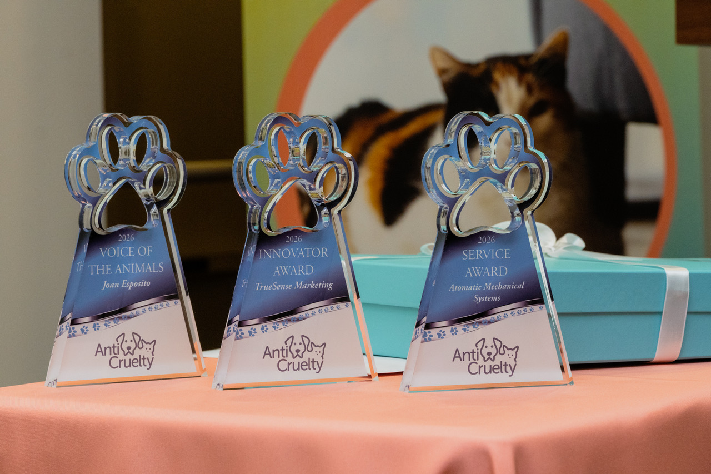
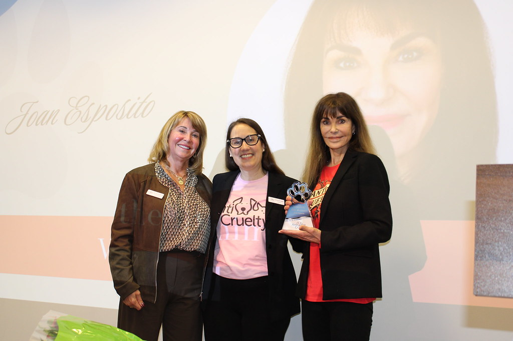
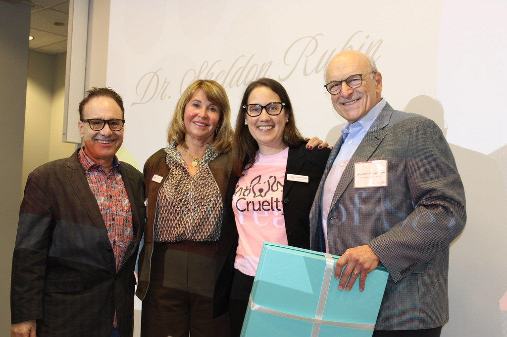
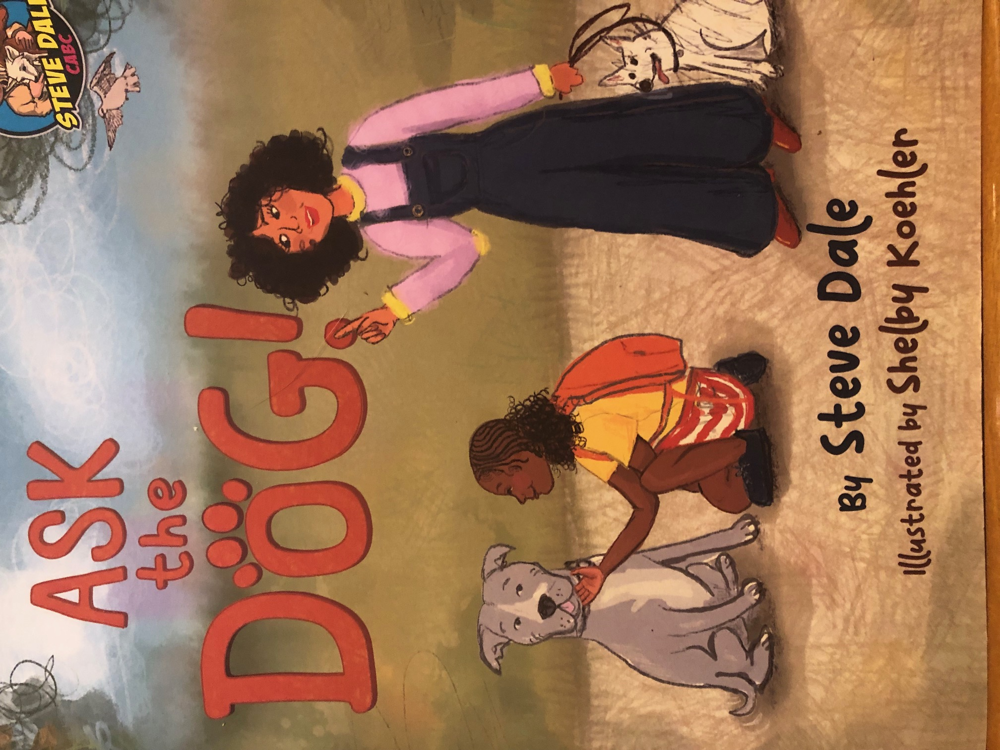
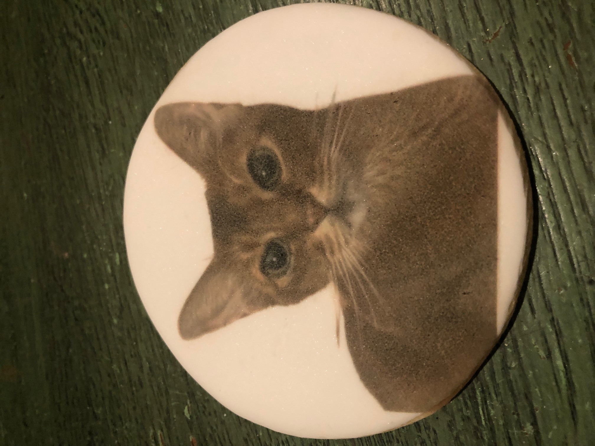

Surrounded by elated staff and guests, Taffy couldn’t stop wagging her tail and snuggling admirers as she easily donned the guest of honor mantra, hopping up on the stage.
Anti-Cruelty President Darlene Duggan introduced the adored alumna to the audience at the organization’s 127th anniversary brunch and open house last Saturday:
“At last year’s anniversary event I told the audience that Taffy had been sheltered with us for longer than most, loved by all the staff but always overlooked. We asked everyone to find an adopter. Taffy’s dream came true and she loves it when her forever parents, who were first her fosters, bring her back for a visit.”
Taffy was one of 4,974 animals placed in homes last year. Volunteers gave more than 80,000 hours to care for the animals, almost 7,000 community pets were assisted and more than 722,000 meals provided. The oldest animal care organization in Chicago, its mission is to build a healthy and happy community where pets and people thrive together. This year’s event recognized their work at the new Roseland Community Center which Duggan said “puts us right into the area where our help is needed most.” The new three-year strategic plan will broaden the organization’s impact and deepen its compassionate care for animals.

“This year our anniversary request is to distribute certificates for free spay/neuter for pets to be done here at Anti-Cruelty and for adoption, thus bringing the community in to know what we are all about,” Duggan said. “This is also when we honor those who have truly advanced our mission.”
Emmy Award-winning journalist turned radio talk show host Joan Esposito won the Voice for Animals award for the inspiring and frequent stories of Anti-Cruelty’s compassionate work on her show.

Esposito told the audience:
“I brought home my first puppy from Anti-Cruelty 37 years ago. Not too long ago I heard that you could take home an animal for a weekend and I decided to do so over Memorial Day. Knowing that I might fall in love, I decided since I am a big dog person to take home a tiny one. She looked like she was put together with spare parts. The night before I was to take her back, she got up in my bed and snuggled very close. Of course, she never went back. I call her ‘pretty girl’ which is an aspirational name.”

WGN anchor Steve Dale introduced Dr. Sheldon Rubin, Director Emeritus of Blum Animal Hospital, honored for his 40-plus years of service at Anti-Cruelty. Dale noted that Dr. Rubin has also aided the Lincoln Park Zoo and advocated for animals on The Oprah Winfrey Show and in earlier years on WGN’s Wally Phillips talk show.
“For every dog with a hopeful tail, every cat with an opinion, I am grateful to have been a part of Anti-Cruelty. And I will still be around like dog hair,” Rubin promised the audience on receiving the award.
At the open house following the celebration, Dale signed copies of his book Ask the Dog, which teaches children the right questions to ask when they meet a dog. “It is not just ‘may I pet your dog’ but how to pay attention to what a dog is saying with her body language,” Dale writes.


Other awards were also presented to devoted Anti-Cruelty supporters, including TrueSense Marketing with the Innovator Award and Atomic Mechanical Systems with the Service Award.
Duggan announced that registration for BARK, Chicago’s oldest and largest dog-centric outdoor fundraiser, to be held in Lincoln Park on May 30, is open now. Over 2,000 paws are anticipated to hit the ground, with a goal of $150,000.
“At this moment, 335 animals — each with their own story and their own hope for a brighter future — are in our care. Register for BARK today, and provide lifesaving support for these and more animals in need. Let’s make their future a reality,” Duggan said.
To register for BARK, visit anticruelty.org.